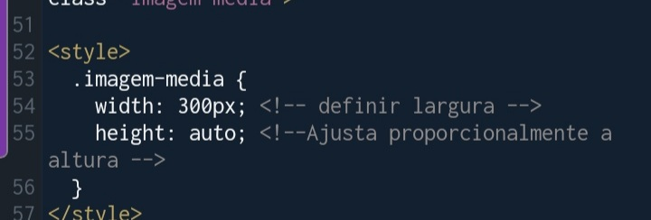
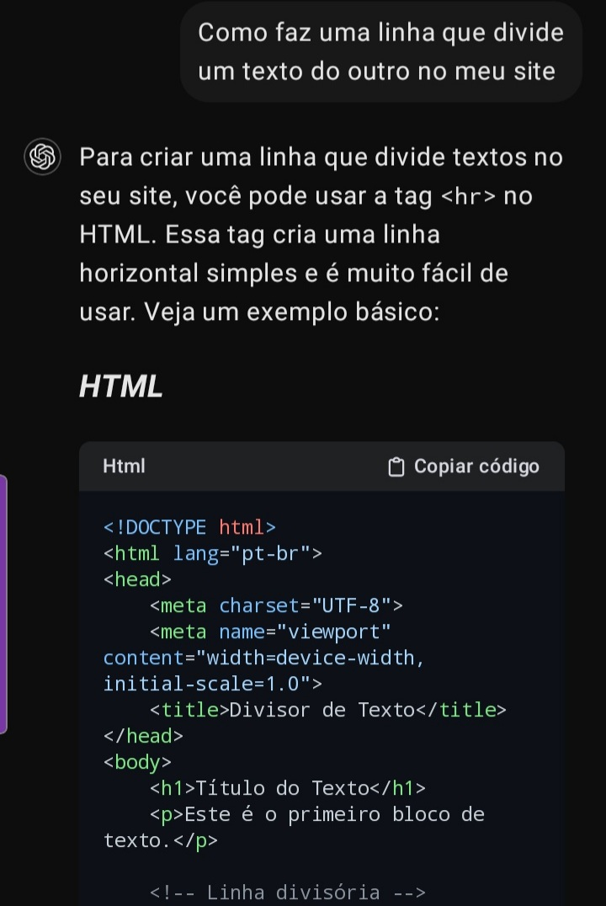
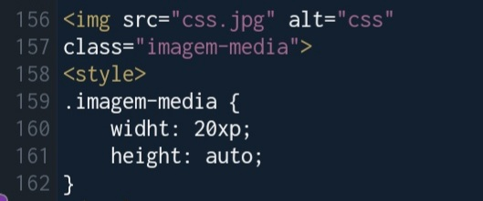

olá, bem vindo a meu site teste, não terá muita coisa no início, mas vou preencher de coisas conforme eu aprendo mais sobre html e sites
i love kaoru hana
aprendi que se usar "<--!", eu faço tipo umas observações, desse jeito meu site fica mais organizado e não me confundo, esses códigos são tão difíceis de decorar, isso vai me ajudar bastante😃
será que realmente importa ter que decorar todos os códigos ou até profissionais tem isso de esquecer eles?🤔
ando aprendendo bastante coisa, mas vou esquecer de tudo, acho que não tem problemas usar o chatgpt para me lembrar e ajudar em algumas coisas, além do mais o app que uso vem com ums códigos prontos. obrigada por facilitar minha vida tecnologia.
o chatgpt sempre me salva as vezes, mas nem sempre podemos contar com ele, na maior parte eu vejo alguns tutoriais e cursos de html, é bem melhor, a IA só me dá um suporte básico, dito isso, não tente fazer site ou outras programações só contando com o chatgpt!

sobre esse tipo de suporte que eu estava falando.
sabem no que também sou boa além de html? edição😎
tudo que aprendi no primeiro dia de aula HTML/CSS
aprendi sobre os códigos de observações que ajudam a organizar e não se atrapalhar entre outros códigos

É bem complicado de aprender e decorar essa parte, ainda mais para quem é horrível em escrever coisas em inglês, não acho que seja um problema. em vídeos que vejo sobre pessoas ensinando html e css, eles sempre pegam um pronto do site de fazer site e ajustam;-;, acho que não tem problema eu pegar do chatgpt e ajustar, será um pecado dos mandamentos da programação? se for eu paro de pegar um pronto e me dedicarei a aprender e decorar para fazer por contra própria😅
em algumas partes eu mesmo consegui fazer depois de algumas práticas. para vocês terem a noção, demorou 1 dia para eu conseguir decorar a palavra background, antes eu ficava vendo como se escrevia😂
como podem ver acima,essa parte eu fiz sozinha de tanta prática, mas antes eu peguei do chatgpt só para copiar e colar, atualmente não preciso fazer isso já que está decorado na mente(será se vou esquecer?)
eu ando aprendendo css e html de vários jeitos, eu aprendo com o chatgpt, aprendo com visões no YouTube,aprendo na prática e aprendo com meus amigos me ensinando🤗